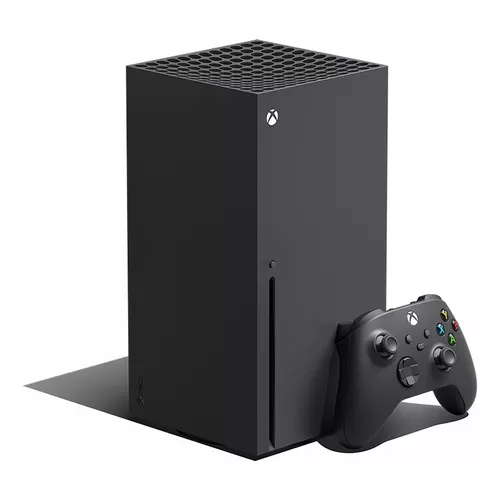

Xbox es una línea de consolas de videojuegos creada por Microsoft, cuyo origen se remonta al año 2000, cuando la compañía decidió incursionar en el mercado de los videojuegos para competir con Sony y Nintendo...
En 2005 llegó el Xbox 360, una consola que marcó una era con su mejora en gráficos, un robusto sistema de juego en línea y la introducción de los logros en videojuegos...
En 2013, Microsoft lanzó el Xbox One, con un enfoque inicial en el entretenimiento multimedia, lo que generó críticas por parte de los jugadores...
Finalmente, en 2020 llegaron el Xbox Series X y Xbox Series S, dos consolas de nueva generación con tiempos de carga ultrarrápidos...